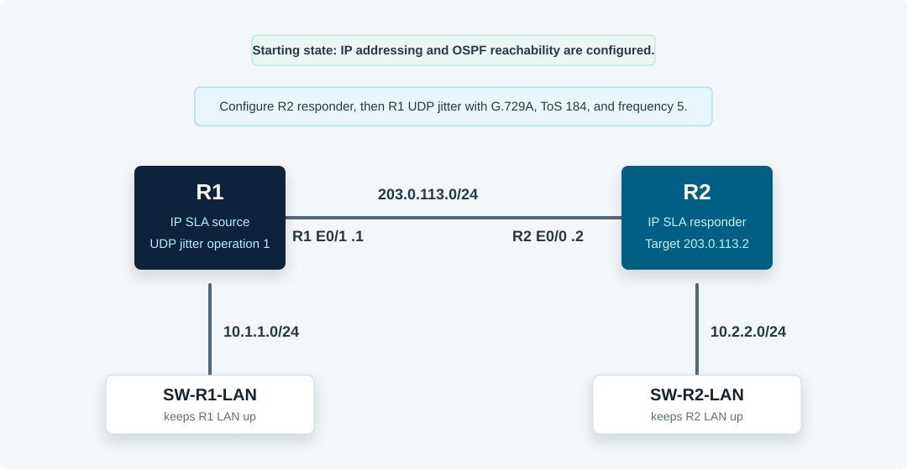

Overview
This lab configures IP SLA Response Time Reporter behavior with a UDP jitter operation. R2 acts as the IP SLA responder. R1 sends simulated voice probes to R2 using UDP port 16384, G.729A codec settings, a ToS byte of 184, and a 5-second probe frequency.
All commands in this guide use the CML Ethernet interface names shown in the topology.
Topology
R1 and R2 are directly connected on 203.0.113.0/24 and run OSPF. The small IOL-L2 switches keep each LAN-facing router interface up so the starting config matches the supplied lab's addressing plan.

Task 1: Verify Baseline Reachability
Verify that OSPF is established and that R1 can reach the R2 probe target.
! R1
show ip interface brief
show ip ospf neighbor
show ip route ospf
ping 203.0.113.2
! R2
show ip interface brief
show ip ospf neighborTask 2: Enable the IP SLA Responder
On R2, enable the general IP SLA responder and verify that it is active.
! R2
conf t
ip sla responder
end
show ip sla responderExpected result: the general IP SLA responder should be enabled on its control ports.
Task 3: Create the UDP Jitter Operation
On R1, create IP SLA operation 1. Target R2 at 203.0.113.2, use the first available voice RTP UDP port from the supplied lab, and configure G.729A with a 20-byte payload.
! R1
conf t
ip sla 1
udp-jitter 203.0.113.2 16384 codec g729a codec-size 20
end
show running-config | section ip slaTask 4: Set Voice-Like ToS and Probe Frequency
Configure the ToS byte and make R1 send probes every 5 seconds.
! R1
conf t
ip sla 1
tos 184
frequency 5
exit
end
show running-config | section ip slaToS 184 corresponds to a voice-style QoS marking in this lab context.
Task 5: Schedule the Operation
Schedule operation 1 to start now and run until manually removed.
! R1
conf t
ip sla schedule 1 start-time now life forever
end
show ip sla configuration 1
show ip sla statistics 1Task 6: Interpret IP SLA Statistics
Wait a few probe intervals, then verify the operation return code and interpret RTT, jitter, packet loss, and voice score fields.
! R1
show ip sla statistics
show ip sla statistics 1 details
show ip sla summaryExpected result: operation 1 should show type udp-jitter, return code OK, successful probes, RTT values, source-to-destination and destination-to-source jitter, packet loss counters, and voice score fields such as ICPIF or MOS if supported by the image.